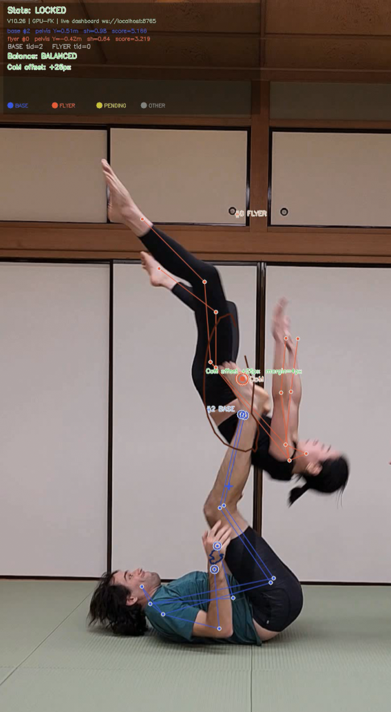

A running, roughly-monthly log of current robotics work at Keio University KMD — short clips and notes on what's actually happening in the lab, separate from the finished project write-ups elsewhere on this site. Less polished, more frequent.
A side project born out of my own AcroYoga practice: real-time multi-person pose tracking that automatically identifies who's base and who's flyer, counts and times pops (launches), and tracks full-body motion and player identity across the whole session — turning a hobby into something I can actually look at afterward.

Bringing up real-time visualization for the G1's onboard sensors (RealSense D435i depth camera, Livox MID-360 LiDAR) and getting SDK-level control working through unitree_sdk2py, alongside CAN bus debugging for the Xiaomi CyberGear motors. Mostly infrastructure work this month — getting the ROS2 Humble / Docker stack reliable before building anything on top of it.
Continuing work on the see-through-window display: homography-warped camera feed with real-time parallax correction driven by face tracking, plus a multi-camera ArUco pose estimation rig to calibrate camera positions against the screen's coordinate frame.